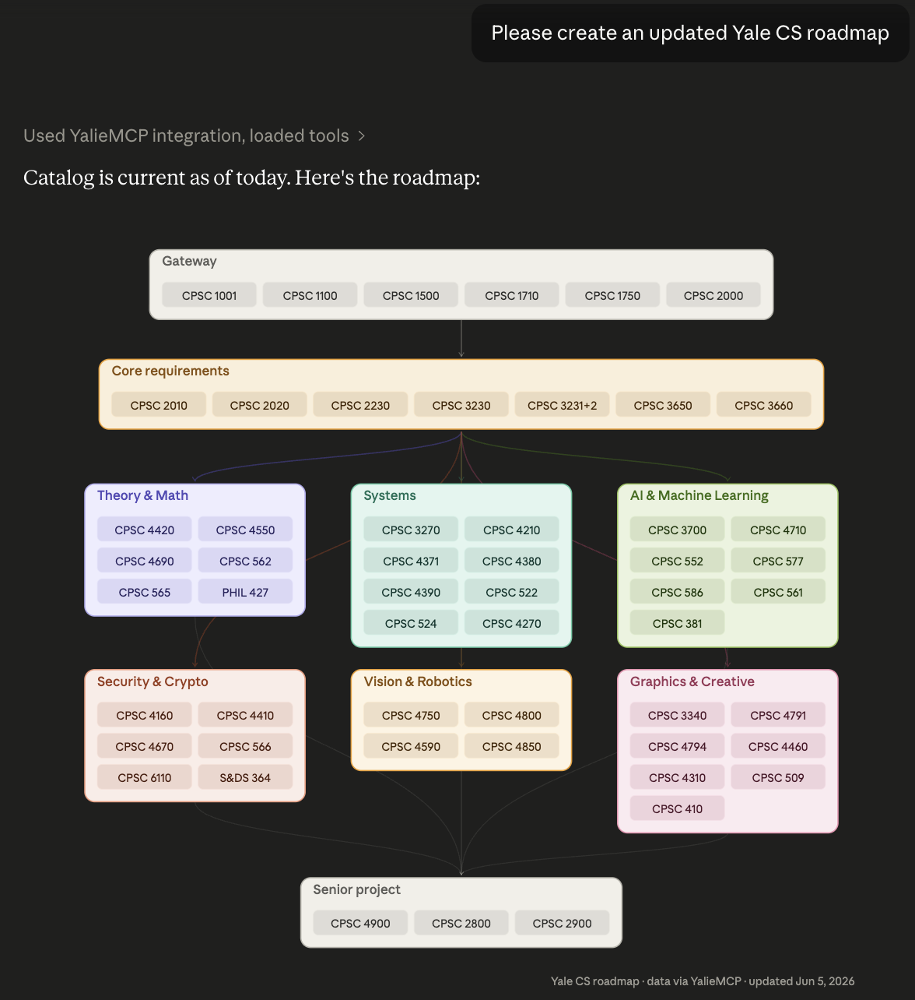

First place $400
YalieMCP
Evan Boyle
YalieMCP unifies CourseTable, Canvas, Degree Audit, Yale’s course catalog, and major roadmaps behind one conversational interface that connects to any MCP-compatible AI client. Students can compare courses, inspect syllabi, check requirements, and plan schedules in natural language—turning a fragmented set of systems into one direct path from question to answer.
